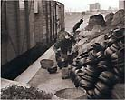
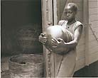
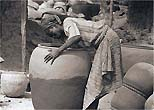
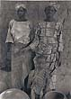
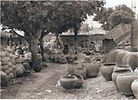
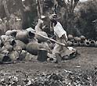
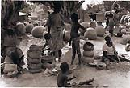
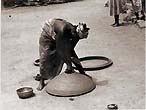
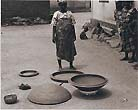

| A Saga of Synchronicity
(Part II)
Making a Film Documentary on African Ceramics
by Ron du Bois, Professor Emeritus of Art, Oklahoma State University
In 2002, fifteen years later, I was able to complete three film/video
documentaries on the women potters in the city of Ilorin, Kwara
State, Nigeria. One, entitled Yoruba Potters: Mothers and Daughters
– Dada Compound, documents the construction of ekoko amu,
huge water-storage vessels essential to daily life, especially in
rural areas where there is no plumbing. The video now exists in
two versions:
- The initial 30-minute version, which I financed myself. It
was the basis for additional funding by the Ford Foundation and
was awarded an Honorable Mention at the film festival, "A
Century of Ceramics on Film and Video," Amsterdam, 1999.
- An expanded and improved 38-minute version, financed by Fulbright
and the Ford Foundation.
A third program, Yoruba Potters: Mothers and Daughters –
Ogbena Compound, approximately 35 minutes, documents the production
of lidded soup bowls, called isasun, used in rural areas for cooking
over an open fire.

The problems of finalizing the Ogbena program were considerable,
and stem from my failure to bring home a really good slide of the
object itself, i.e., an earthenware lidded soup bowl. That oversight
was to cost at least a year of delay, additional worry, and inconvenience
for museum personnel here and abroad trying to help with the project.
I was unable to obtain good close up photos or to locate a Yoruba
lidded soup bowl in any museum collection. As of May 12, 2002, Dr.
Afolabi attempted four times to bring one or two isasun to the U.S.
Unfortunately, all attempts failed. (As of May 12, 2002, no isasun
had been successfully delivered to me in Stillwater. Another attempt
is now in progress. )
Both the ekoko amu and the isasun are produced with hand-building
skills alone. The entire processes for both are documented in these
videos. The Dada Compound video demonstrates and explains the construction
of huge ekoko amu, from digging and working the clay to the dramatic
"open field" firing of more than a thousand perfectly
symmetrical water vessels made without a potter's wheel. The women
and girls, ages 5 to 65, work at their profession from dawn to dusk,
year-round. Because of rapidly changing conditions in Nigeria –
the infatuation with modern technology and plastics – these
skills could pass away, victims of Western technology and notions
of "progress".

The subject was of intense interest to me, but no funding agency
appeared interested in a documentary about black women potters.
Over the course of a decade, I wrote applications without success
to all agencies suggested by the University Grants Office. Was racism,
it occurred to me, a factor in a pattern of disinterest?
Finally, when all chances of funding had failed, I personally financed
the production of Dada Compound. The decision to spend my own funds
was based on my own intense interest in the subject and my desire
to make it available to a larger audience. By chance this coincided
with the interest and availability of a writer friend, Dr. Sandra
Williams. She understood the technical aspects of video editing
and production, had her doctorate in theatre and was an expert in
video-script writing. She could transcribe the written word into
the spoken word and she rewrote parts of my field notes into effective
narration. Every effort was made to economize, and much of her work
was voluntary. As the principal investigator and resident expert,
I had already completed a great deal of the conceptual and preparatory
work.
The video production studio was located in Tulsa, a round trip
of 145 miles from Stillwater. The actual outlay mounted to over
$5,000 for video production costs and honorarium support for Dr.
Williams.

There are likely to be tensions between video production editors
and clients on how to select, sequence, and edit the visual material.
The young man who worked on Dada Compound, a non-educator and a
non-potter, didn't have the same regard for the material as Dr.
Williams and I had. He liked a fast sense of tempo, as in commercials.
Quick cuts seemed natural to him, but not to me. The ambient sounds
of pottery making and village life were musical to me, but video
without narration or background music made him uncomfortable. Nevertheless,
the video editor's expertise and technical knowledge are critical.
The video editor for the revised production contributed significantly
to the expressive and visual effectiveness.
Editing sessions are expensive. The objective is to have everything
organized so that no time is lost and no money wasted. Yet an editing
project seems to develop a life of its own and inevitably requires
more time and money than anticipated. Picture material can be edited
in an infinite number of ways. The "right" way is subjective.
The process requires a sense of visual form as well as of storytelling,
in my case, hopefully resulting in a product that would appeal to
an audience of potters as well as to specialists in African art.
I wanted the material to be presented in such a way that Western
potters could, if they so desired, recreate the processes and the
objects documented. I felt narration should be authentic, based
on a common fund of information understood by students and African
arts specialists. The final responsibility rested with me –
the only person who had a background in studio ceramics, African
art, photography, etc., – and who had no experience in video
editing or scriptwriting.
I had gone to Nigeria with the view that the work had to be done
by "a single researcher with a camera" who could learn
about the culture, the potters and the process, and document them
as they were learned. I wanted to use the "indirect method"
of the creative process, in which the final result is not known
at the outset. It is the only practical method of filming in a situation
where there is little, if any, pre-existing knowledge of what is
to be documented.
The "direct method" is one in which the information
is already known, so that a script can be written listing the sequence
of camera shots. The "direct method" might be more efficient
for a professional film crew after the research and observation
have been completed. But there is no doubt, especially in a remote
area, that the footage a lone cameraman can gather over the course
of several months or a year is far more substantial.
In my situation the services of a professional crew were ruled
out by budget. To stay solvent, I had to be my own cameraman. I
was pleased when I asked my video editor, "What's the difference
in the way I shot this documentary and the way a professional would
have shot it?” His answer was, "None."

I have never felt comfortable with a beautifully produced film
without narration. The absence of informed narration, I feel, reduces
the educational value. It avoids the demanding task of writing and
matching narration to visual images.
I sent the initial 30-minute version, along with other application
materials, a written proposal, and a budget proposal to the Ford
Foundation, Lagos, Nigeria for yet another attempt at funding. The
written proposal stressed the importance of documenting the hand-built
production of the massive ekoko amu water vessels made at Dada Compound
and the much smaller lidded soup bowls, called isasun, at Ogbena
Compound. Both are essential to survival in village Nigeria. But
it was the video itself that spelled the difference between just
another application and a successful application. The video showed
clearly the quality and importance of the project. The application
stipulated a budget of $75,000. The counter-offer was $50,000 and
was accepted. This reduction ruled out compensation for the researcher/producer.
I continued working as a volunteer.

In 1986, just after retirement from Oklahoma State University,
I was awarded a Fulbright Senior African Regional Research Award,
which funded the original research. I was told, along with the other
grantees at the Fulbright orientation session in Washington, D.C.,
that the competition had been intense and that we were all fortunate
to have been selected. I had applied as an art professor, potter,
photographer, and African art specialist.
I had introduced and taught the first survey course in African
art offered in Oklahoma, called, "The Humanistic Tradition
in African Art." The title and contents of the course were
based on notes and materials obtained from Professor Joe Hill, New
York University. I owe a debt of gratitude to his systematic and
well-organized presentation of stylistic "accents." His
course, grounded in humanistic values, concerns, ambiguities, and
questions, served as an important point of reference for understanding
the arts of the world and the arts of early societies in particular.
Sales and rental information is posted on Prof. du Bois' website:
http://www.angelfire.com/ok2/dubois
or email duboisr_osu@brightok.net.
> Previous page:
The Nigerian Saga
Text and images courtesy of Ron
du Bois, Professor Emeritus of Art, Oklahoma State University
More Articles
|